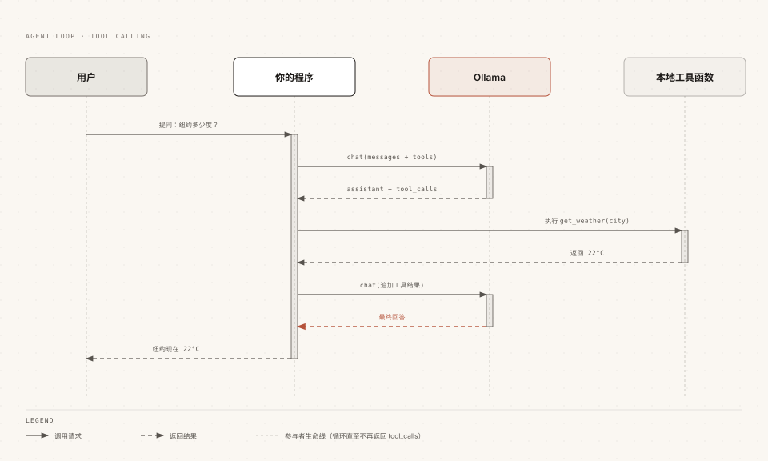

Ollama 六大モデル能力実践
ストリーム出力、思考モード、構造化出力、視覚理解、ベクトル埋め込み、ツール呼び出し、さらにオンライン検索を加えることで、Ollama モデル能力の完全な全体像が構成されます。
この章では公式 Python ライブラリを使用して各能力を1つずつ実践します。すべての例はそのまま実行できます。
まず、Ollama の Python SDK をインストールする必要があります。
pip でインストールできます：
pip install ollama
お使いの環境に Python 3.x がインストールされていること、またネットワーク環境から Ollama ローカルサービスにアクセスできることを確認してください。
Python SDK を使用する前に、Ollama ローカルサービスが起動していることを確認してください。
コマンドラインツールを使用して起動できます：
ollama serve
ローカルサービスを起動すると、Python SDK はローカルサービスと通信し、モデル推論などのタスクを実行します。
能力一：ストリーム出力
ストリーム出力により回答が一文字ずつ画面に表示されるようになり、チャットアプリの体験の基盤となります。
SDK で stream を True に設定し、各データチャンクを反復処理します：
例
# 开启流式，逐块接收响应
stream = chat(
model='qwen3.5',
messages=[{'role': 'user', 'content': '用三句话介绍 RUNOOB 菜鸟教程'}],
stream=True,
)
# 逐块打印，同时拼接完整内容
content = ''
for chunk in stream:
print(chunk.message.content, end='', flush=True)
content += chunk.message.content
# 拼接后的 content 可用于保存历史、入库存档
重要なポイント：ストリームの各データチャンクは単なる「断片」であり、クライアント側で完全なコンテンツを自分で蓄積する必要があります。このラウンドの回答を後で会話履歴に入れる場合に使用するのは、連結後の完全なテキストです。
能力二：思考モード
推論モデルは最初に思考プロセスを出力してから回答を返します。SDK では think パラメータで制御し、思考と本文はそれぞれ別のフィールドに分かれています。
例
response = chat(
model='qwen3.5',
messages=[{'role': 'user', 'content': '9.9 和 9.11 谁大？'}],
think=True,
stream=False,
)
# 思考过程与最终答案分属两个字段
print('思考：', response.message.thinking)
print('答案：', response.message.content)
ストリームシナリオでは、thinking と content がデータチャンク内で交互に現れます。ステートマシン方式でレンダリング領域を切り替えます：
例
stream = chat(
model='qwen3.5',
messages=[{'role': 'user', 'content': '17 乘 23 等于多少？'}],
think=True,
stream=True,
)
in_thinking = False
for chunk in stream:
if chunk.message.thinking:
if not in_thinking:
in_thinking = True
print('【思考中】', end='', flush=True)
print(chunk.message.thinking, end='', flush=True)
elif chunk.message.content:
if in_thinking:
in_thinking = False
print('\n【答案】', end='', flush=True)
print(chunk.message.content, end='', flush=True)
UI 実装の提案：thinking は折りたたみ可能なグレー領域としてレンダリングし、content は本文としてレンダリングします。gpt-oss シリーズは low / medium / high の3段階の思考強度のみ受け付け、ブール値を渡しても無効です。
能力3：構造化出力
構造化出力により、モデルは JSON Schema に厳密に準拠したデータを返します。Pydantic の検証と組み合わせることで、プログラムがモデル出力を利用する標準的な方法となります。
例
from pydantic import BaseModel
# 用 Pydantic 定义期望的数据结构
class Site(BaseModel):
name: str
category: str
free: bool
response = chat(
model='qwen3.5',
messages=[{'role': 'user', 'content': '介绍一下 RUNOOB 菜鸟教程'}],
format=Site.model_json_schema(),
)
# 返回内容是符合 schema 的 JSON 字符串，直接校验解析
site = Site.model_validate_json(response.message.content)
print(site.name, site.category, site.free)
このパターンはすべてのデータ抽出系アプリケーションの基盤です。履歴書からフィールドを抽出する、チケットから要素を取り出す、画像から情報を抽出する（視覚能力と組み合わせる）など、すべてこれを使用します。
安定性のための2つのテクニック：options の temperature を 0 に設定する。プロンプト内でフィールドの意味も併せて説明し、schema と二重に制約する。
能力4：視覚理解
マルチモーダルモデル（例：qwen3.5）は画像を受け取ることができます。SDK はファイルパスを直接渡すことをサポートしており、REST API の base64 エンコードよりもはるかに手間がかかりません。
例
response = chat(
model='qwen3.5',
messages=[{
'role': 'user',
'content': '这张截图是什么页面？列出主要功能。',
'images': ['screenshot.png'],
}],
)
print(response.message.content)
視覚と構造化出力を組み合わせると、「画像からデータへ」の変換ができます：
例
from pydantic import BaseModel
# 定义从图片中抽取的目标结构
class Receipt(BaseModel):
merchant: str
total: float
date: str
response = chat(
model='qwen3.5',
messages=[{
'role': 'user',
'content': '从这张票据照片提取商家、金额、日期',
'images': ['receipt.jpg'],
}],
format=Receipt.model_json_schema(),
options={'temperature': 0},
)
print(Receipt.model_validate_json(response.message.content))
能力五：ベクトル埋め込み
embed インターフェースはテキストベクトルを一括生成し、コサイン類似度と組み合わせることで、最小限の実用可能なセマンティック検索を実現できます。
例
# 批量生成文档向量
docs = [
'Python 是一门解释型语言',
'JavaScript 主要运行在浏览器',
'RUNOOB 提供免费编程教程',
]
result = ollama.embed(model='embeddinggemma', input=docs)
vectors = result['embeddings']
print(len(vectors), len(vectors[0])) # 3 条向量及其维度
# 查询向量与文档向量做余弦相似度即可排序检索
query = ollama.embed(model='embeddinggemma', input='学 python 难吗')
インデックスとクエリは同じ埋め込みモデルを使用する必要があります。そうしないとベクトル空間が一致せず、検索結果に意味がありません。完全な知識ベースの実践は RAG プロジェクトの章で詳しく解説します。
能力六：ツール呼び出し
ツール呼び出しにより、モデルは「助けを求める」ことを学びます。外部情報が必要と判断したときは tool_calls を返し、プログラムが実際の関数を実行し、結果を返すとモデルが要約して回答します。
まず完全な Agent loop のシーケンスを見て、メッセージが四者の間でどのように流れるのかを理解しましょう：

Python SDK では関数をツールとして直接渡すことができます。関数シグネチャと docstring は自動的に schema に解析されます：
例
# 本地工具函数：docstring 会成为模型看到的工具说明
def get_weather(city: str) -> str:
"""查询指定城市的当前气温
Args:
city: 城市名称
Returns:
当前气温描述
"""
temperatures = {"北京": "22°C", "上海": "26°C", "纽约": "18°C"}
return temperatures.get(city, "未知城市")
messages = [{'role': 'user', 'content': '纽约现在多少度？'}]
# Agent loop：循环直到模型不再请求工具
while True:
response = chat(
model='qwen3.5',
messages=messages,
tools=[get_weather],
)
# 把模型消息（含 tool_calls）追加进历史
messages.append(response.message)
if not response.message.tool_calls:
# 没有工具请求了，输出最终回答
print(response.message.content)
break
# 有工具请求：执行并把结果以 tool 角色回传
for call in response.message.tool_calls:
result = get_weather(**call.function.arguments)
messages.append({
'role': 'tool',
'tool_name': call.function.name,
'content': result,
})
3つのエンジニアリング上の要点：1つ目、毎回の response.message を元のまま messages に追加し、ツール結果は tool ロールで返すこと。2つ目、並列ツール呼び出しではモデルが一度に複数の tool_calls を返す可能性があるため、1つずつ実行して1つずつ追加すること。3つ目、実際のプロジェクトではツール結果が非常に長くなる可能性があるため、コンテキストウィンドウを保護するために切り詰めに注意すること。
能力七：オンライン検索
Ollama 公式は web_search と web_fetch の2つのオンラインインターフェースを提供しています。これらをツールとしてモデルに渡すことで、トレーニングデータ以外の新しい情報に回答させることができます。
例
# 把联网能力作为工具挂载
available_tools = {'web_search': web_search, 'web_fetch': web_fetch}
messages = [{'role': 'user', 'content': "Ollama 最近有什么新特性？"}]
while True:
response = chat(
model='qwen3.5',
messages=messages,
tools=[web_search, web_fetch],
think=True,
)
messages.append(response.message)
if not response.message.tool_calls:
print(response.message.content)
break
for call in response.message.tool_calls:
func = available_tools.get(call.function.name)
if func:
# 工具结果可能很长，截断保护上下文
result = str(func(**call.function.arguments))
messages.append({
'role': 'tool',
'tool_name': call.function.name,
'content': result[:2000],
})
その他の拡張機能オンラインインターフェースの使用には ollama.com での API Key の作成が必要です。検索結果は簡単に数千 token に達するため、公式はこの種の Agent シナリオではコンテキストを 32K 以上に設定することを推奨しています。また、既製の MCP Server 実装もあり、Cline、Codex などのツールに接続できます。統合の詳細はエコシステムの章を参照してください。
クリックしてノートを共有
ノートは本記事の内容を拡張したものである必要があります！
記事の投稿はこちらをクリックしてください
登録招待コードの取得方法
ノートを共有する前にログインが必要です！
登録招待コードの取得方法